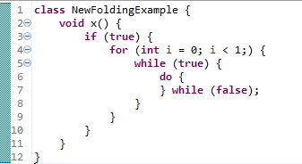
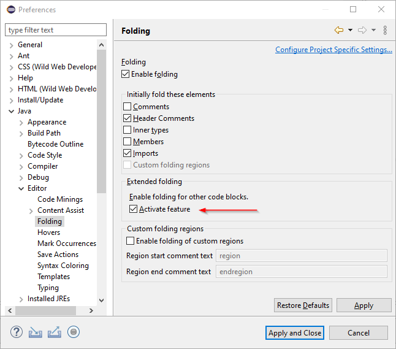
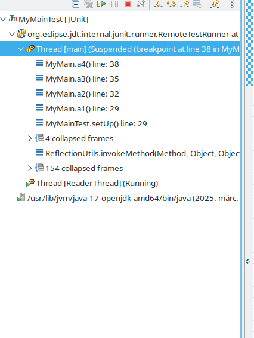
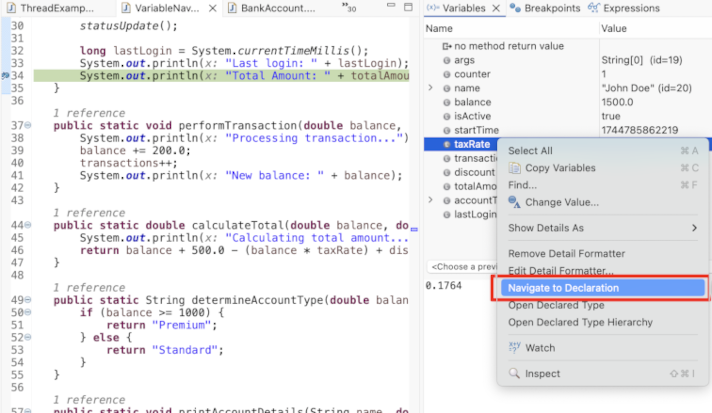
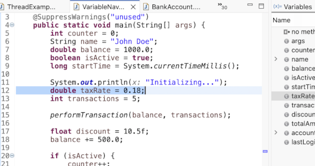
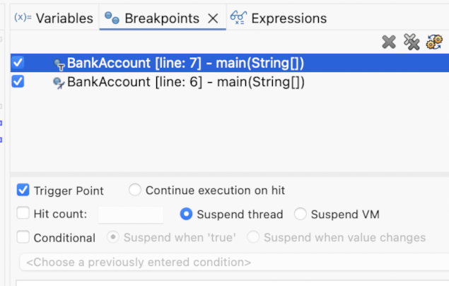
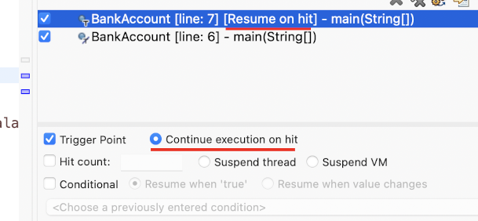
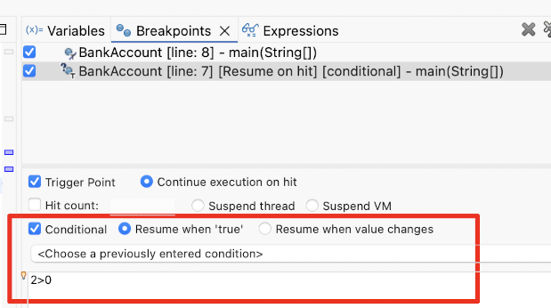

JUnit
Java Editor

on that preference page, you can specify the text that should be used to start and end a custom folding region. When this is enabled, writing a comment starting with the specified region start followed by another comment starting with the specified region end creates a folding region.

Custom folding regions can be collapsed like any other folding regions.


In the previous releases, a preference to enable different kinds of folding was introduced (see the news for 4.35). The feature has been further improved since then and is now enabled by default.
This feature enhances the code folding mechanism in Eclipse JDT by enabling folding for control statements like
if, while, switch and for.
It improves code readability and navigation by allowing developers to collapse and expand structured blocks.

The feature can be disabled in the settings under Java → Editor → Folding.

Java Views and Dialogs
Java Compiler
Java Formatter
Debug
The feature can be enabled from the Debug toolbar in Debug > Java > Collapse Stack Frames.
After enabling it, the view becomes much simpler and less intimidating:
Choose Navigate to Declaration from context menu of a variable.
The editor will jump and highlight its declaration.
Upon enabling a trigger point, a new option will be shown to Continue execution on hit or not.
Once Continue execution on hit is toggled, the breakpoint label will update to [Resume on hit] meaning it won't suspend on hit.
Resume trigger also supports conditions, meaning if condition is true it will resume the execution otherwise it will suspend.
Now when you run in debug mode, the trigger point won't hit, allowing you to skip previous breakpoints, and stop on the actual breakpoint on which you need to focus.
For example, here Resume trigger was set on line number 7 and during debugging it hit on line number 8 by skipping all the previous breakpoints.